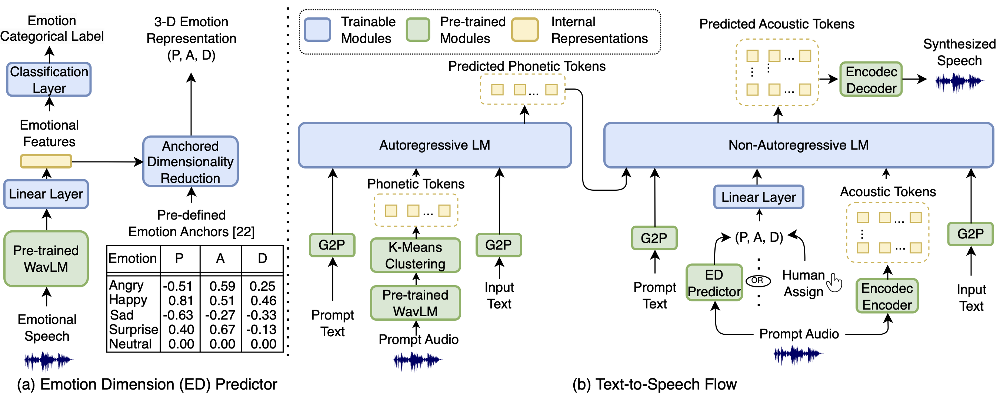

--------------------------------> Abstract <---------------------------------
Current emotional text-to-speech (TTS) systems face challenges in mimicking a broad spectrum of human emotions due to the inherent complexity of emotions and limitations in emotional speech datasets and models. This paper proposes a TTS framework that facilitates control over pleasure, arousal, and dominance, and can synthesize a diversity of emotional styles without requiring any emotional speech data during TTS training. We train an emotional attribute predictor using only categorical labels from speech data, aligning with psychological research and incorporating anchored dimensionality reduction on self-supervised learning (SSL) features. The TTS framework converts text inputs into phonetic tokens via an autoregressive language model and uses pseudo-emotional dimensions to guide the parallel prediction of fine-grained acoustic details. Experiments conducted on the LibriTTS dataset demonstrate that our framework can synthesize speech with enhanced naturalness and a variety of emotional styles by effectively controlling emotional dimensions, even without the inclusion of any emotional speech during TTS training.
----------------------------> System Overview <----------------------------

----------------------------> Speech Samples <-----------------------------
(A) Zero-Shot TTS |
|||
|---|---|---|---|
In this experiment, we evaluate our proposed framework on the zero-shot TTS task. In the proposed framework, the emotional dimension (ED) value is predicted based on the prompt speech ('Proposed w/ ED Prediction'). We selected 'Phonectic-Enhanced VALL-E' as the baseline, which demonstrates a greater robustness and enhanced zero-shot speaker cloning performance than the popular VALL-E. Listeners are suggested to pay attention to the speech naturalness and the prosody similarity with the prompt speech. |
|||
| Prompt Speech | Phonetic-Enhanced VALL-E (Baseline)[1] | Proposed w/ ED Prediction | Ground-Truth | Input Text: "At night, when no one knew it, the tears would come racing over the poor, forlorn little face, and would not be squeezed back." |
Input Text: " Its body is entirely covered with a thick armour of scales, and its neck, as flexible as a swan's, rises thirty feet above the waves." |
|||
Input Text: "Every plant in the grass is set formally, grows perfectly, and may be realized completely." |
|||
Input Text: "It is true that the horses are here, but the Hurons are gone; let us, then, hunt for the path by which they parted." |
|||
Input Text: "You ought to know, john, if I teach Negroes I'll scarcely see much of people in my own class." |
|||
Input Text: "The Jury of Awards, in presenting four medals to the Edison company, took occasion to pay a high compliment to the efficiency of the system." |
|||
Input Text: "In other words, these three men took down the lectures which Luther addressed to his students in the course of galatians, and Roerer prepared the manuscript for the printer." |
|||
(B) 5 Basic Emotions Evaluation |
||||
|---|---|---|---|---|
In this experiment, we evaluate the performance of the proposed framework on synthesizing 5 basic emotions: Angry, Happy, Sad, Surprise and Neutral. |
||||
| Neutral | Angry | Happy | Sad | Surprise | Input Text: "Is the atmospheric condition, having once reached this density, to become final?" |
Input Text: ""I will show you what a good job I did," and she went to a tall cupboard and threw open the doors." |
||||
Input Text: "I could not take my eyes off this indented iron bar." |
||||
Input Text: "Luther's commentary fills seven hundred and thirty-three octavo pages in the Weidman Edition of his works." |
||||
Input Text: "A ring of amethyst I could not wear here, plainer to my sight, Than that first kiss." |
||||
(C) 8 Emotions Evaluation |
|
|---|---|
(1) Anger vs. Anxiety |
|
| Anger | Anxiety | Input Text: ""The outbreak," I returned, "will make a tremendous occasion of Thursday night;" and everyone so agreed with me that, in the light of it, we lost all attention for everything else." |
Input Text: "The Patchwork Girl was taller than he, when she stood upright, and her body was plump and rounded because it had been so neatly stuffed with cotton." |
|
Input Text: "Miss Taylor was soon starving for human companionship, for the lighter touches of life and some of its warmth and laughter." |
|
Input Text: ""After all, the "Mormon" people regard the advent of the Buchanan army as one of the greatest material blessings ever brought to them." |
|
Input Text: "Irene Burgoyne, one of her family, told me in confidence that there was a romance somewhere back in the beginning." |
|
(2) Pleasure vs. Elation |
|
| Pleasure | Elation | Input Text: ""The outbreak," I returned, "will make a tremendous occasion of Thursday night;" and everyone so agreed with me that, in the light of it, we lost all attention for everything else." |
Input Text: "But if you go on into the veracities of the school of Clay, you will find there is something at the roots of almond and apple trees, which is-This." |
|
Input Text: "The Patchwork Girl was taller than he, when she stood upright, and her body was plump and rounded because it had been so neatly stuffed with cotton." |
|
Input Text: "Martelli composed a satire against Maffei, in which he designated him by the anagram of Femia." |
|
Input Text: "Irene Burgoyne, one of her family, told me in confidence that there was a romance somewhere back in the beginning." |
|
(3) Relaxed vs. Protected |
|
| Relaxed | Protected | Input Text: "An appeal was made to the executive of the state, but little encouragement was returned." |
Input Text: ""After all, the "Mormon" people regard the advent of the Buchanan army as one of the greatest material blessings ever brought to them." |
|
Input Text: ""Let's swap caps," he said, "and I will give you my jack knife to boot."" |
|
Input Text: ""Very well," replied the Boolooroo, "you shall eat with me, for then I can keep an eye on you." |
|
Input Text: ""Can't I take any of the treasure with me?" he pleaded." |
|
(4) Surprised vs. Alert |
|
| Surprised | Alert | Input Text: "Philip had a good appetite, a sunny temper, and a clear hearty laugh." |
Input Text: "The king remained for a moment to enjoy a triumph as complete as it could possibly be." |
|
Input Text: "The fisher of the chutes, meanwhile, was swimming straight downstream for the broken water." |
|
Input Text: "thirty seven degrees centigrade equals human body temperature" |
|
Input Text: "Trot was in the room, too, standing in a corner and listening to all that was said while she racked her little brain for an idea that would enable her to save Cap'n Bill from being patched." |
|